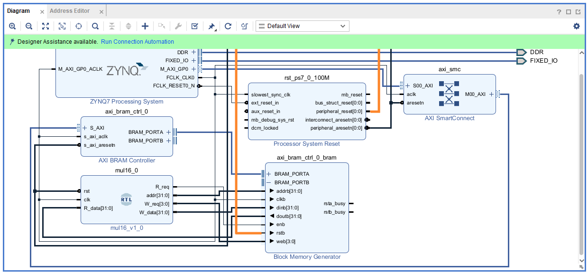

Part4-BRAM
What is BRAM?
BRAM（Block RAM）是 FPGA 內建的一種高速記憶體資源，專門用於儲存大量資料，可由邏輯電路或 ZYNQ 的 ARM 核心 進行讀寫。與外部記憶體（ DDR ）相比，BRAM 擁有更快的存取速度與更低的延遲，適合用於對速度與時序要求較高的應用。
BRAM in Zynq-7020
Zynq-7000 系列中的 Zynq-7020 SoC，內部 PL 中提供：
| 資源類型 | 數量 | 說明 |
|---|---|---|
| 36K BRAM blocks | 140 個 | 每個 Block 為 36Kbits（4.5KB），可配置為 Single Port 或 Dual Port 記憶體 |
| 總容量 | 約 630KB | 合計容量為 140 × 4.5KB ≈ 630KB |
Part 4.1 BRAM Configuration
-
Create a New Vivado Project and Create a New Block Design
-
加入
Block Memory Generator
-
進入該 IP 設定頁面

Mode
| Mode | 說明 |
|---|---|
| BRAM Controller | 搭配 Vivado 中的 AXI BRAM Controller IP 使用，由 AXI 控制 BRAM Controller 來生成 BRAM 讀取寫入所需的訊號。可透過軟體端對該BRAM進行寫入讀取。 |
| Standalone | 不搭配 BRAM Controller來使用，無法由軟體直接存取，需由硬體自行管理資料的讀寫時序，但在細節配置上更靈活。 |
Memory Type
| 記憶體類型 | 說明 |
|---|---|
| Single Port RAM | 單一讀寫 port，每個Clock內只能進行一次 Read 或 Write。 |
| True Dual Port RAM | 兩個獨立的讀寫 port（Port A 與 Port B），可同時或交錯進行兩筆資料的讀寫操作。 |
| Simple Dual Port RAM（部分版本中才有） | 一個 port 專門寫入、一個 port 專門讀出，無法雙向操作，適用於 FIFO 或資料搬移應用。 |
| Single Port ROM | 單 Port 唯讀記憶體，僅支援讀取，常用來初始化常數資料（如查找表 LUT）。 |
| Dual Port ROM | 雙 Port 唯讀記憶體，支援兩組獨立的讀取存取。 |
Write Enable
| 選項 | 說明 |
|---|---|
| Byte Write Enable | 啟用後，允許以「Byte 為單位」進行選擇性寫入（例如：只改某一個 Byte，不影響整個 word），在 BRAM Controller 下預設開啟。 |
| Byte Size (bits) | 指定一個「Byte」的大小，選項有：8-bit（1 Byte）、9-bit（帶 parity bit）。該選項會影響 Write Enable mask 的 bit 數。例如：若資料寬度為 32-bit、Byte Size 為 8-bit → 則會有 4-bit 的 write enable mask（每 bit 控制一個 Byte）。 |
Standalone mode Port

| 欄位名稱 | 說明 |
|---|---|
| Write Width / Read Width | 資料的寫入與讀出 width（bit），該寬度即為 BRAM 內一個 word 的大小，在 standalone 模式下每個 address 就對應到一筆資料 (word)。 |
| Write Depth / Read Depth | 記憶體的深度（即有幾筆資料） |
| Operating Mode | BRAM 寫入行為 |
| Enable Port Type | 控制使能訊號，可設定成 Use ENA Pin，使用單獨的 ENA 腳位控制啟用，Always Enabled，永遠啟用 |
| Primitives Output Register | 啟用後，使用 BRAM 的輸出Register，會造成讀出資料的 delay 增加，但可以改善 Critical Path |
| Core Output Register | 從 IP 核心插入一級 Register，用於同步資料輸出，可改善改善 Critical Path |
Operating Mode
Operating Mode 是用來控制當你對 BRAM 寫入資料時，輸出端（即 DO 或 DOUT）的行為。
📌寫資料的同時，輸出端到底要顯示什麼？
Write First

寫入資料與輸出同步更新。寫入 clock 觸發後，DOUT 立即反映寫入值。
Read First

寫入 clock 觸發時，DOUT 輸出寫入位置的舊資料。
No Change

寫入 clock 觸發時，DOUT 保持前一次輸出的值不變。
BRAM Controller mode Port

當你在 Block Memory Generator IP 中選擇 BRAM Controller Mode 時，該 IP 就不再是一個獨立的 BRAM，而是由 AXI BRAM Controller 所主控的記憶體資源。
此時的 BRAM 是透過 AXI 總線與 PS 端進行資料交換，無法自行修改 Write/Read Width，所有設定皆由 AXI 接口協定所決定。

BRAM 的 Depth 不再由 Block Memory Generator IP 的介面設定，而是由 Vivado 的 Address Editor 中的 Address Map 來決定。
Memory Initialization

在 Standalone 模式 下使用 BRAM 時，記憶體的內容可以透過 .coe 檔案（Coefficient file） 進行初始化。
.coe檔案是一種文字格式的記憶體初始化檔案，Vivado 會在產生 bitstream 時將其內容寫入 BRAM 中。
BRAM Summary

可以從該頁面看到所使用的 BRAM 數量跟 Port Read Latency
Part 4.2 Standalone BRAM
在進行純硬體設計（Pure RTL or Block Design without Processor）的情境下，BRAM 是我們在 FPGA 裡最常用來儲存大量資料的元件。
Standalone BRAM 請自行練習設計，Standalone BRAM 使用上跟 ASIC Design 的 SRAM 類似
Part 4.3 BRAM Controller
-
Create a New Vivado Project and Create a New Block Design
-
加入
ZYNQ7 Processing System，並點選上方的Run Block Automation -
將
ZYNQ7 Processing System設定中的Peripheral I/O Pins，全部取消並只勾選UART0
-
加入
AXI BRAM Controller
-
點選左側選單
Project Manager -> Add Sources，加入HDL/mul16.v
-
將
mul16.v加入 Block Design，可對mul16.v點右鍵按Add Module to Block Design或 直接拖曳到右邊的 Block Design
-
未連線前應該如下圖所示

-
點選上方
Run Connection Automation，除了 BRAM_PORTB 之外都勾選
-
將
Block Memory Generator設定成 TDP (True Dual Port)
-
將
mul16接到Block Memory Generator，必須手動一個一個接，其中rstb為正緣觸發，必須接在 Process System Reset 的peripheral_reset上
-
將
AXI BRAM Controller設定中，Number of BRAM interfaces設定成 1
-
電路設計完成圖

-
Create HDL Wrapper->Generate Bitstream->Export .xsa
📌 雖然 AXI BRAM Controller IP 可以連接兩組 BRAM 接口（Port A 與 Port B），但整個 IP 在 AXI 系統中，只會對應到一個 AXI Address Range，所以我們不能透過一顆
AXI BRAM Controller去控制兩塊Block Memory Generator
📌 在設計 TDP（True Dual Port）BRAM 時，常見的作法是：
一個 Port（如 Port A）用來連接 AXI BRAM Controller，由 處理器（如 MicroBlaze 或 ARM）端控制
另一個 Port（如 Port B）則直接連接到 自訂的 RTL 硬體模組
Part 4.4 Vitis Project
-
照
Part1的方式創立一個 Vitis Project -
使用 Part4.3 產生的
.xsa檔案，創建Platform Component -
一樣使用
Example Design裡面的Hello_World作為初始的Application Project -
將
Application Project內的hello_world.c替換成該次Lab裡面的src/main.c -
先
build platform -
再
build application -
連接上 PYNQ 板
-
打開
MobaXtermSerial 方式連接上 PYNQ -
點選
Run
Part 4.5 Run & Result
-
將兩筆資料（60 和 20）寫入 BRAM 的特定位址
-
讓硬體邏輯（mul16 模組）自動讀取這兩筆資料、進行乘法
-
從 BRAM 的結果位址讀回硬體計算出來的乘積（應為 1200）
-
透過 UART 印出這些操作的過程與結果